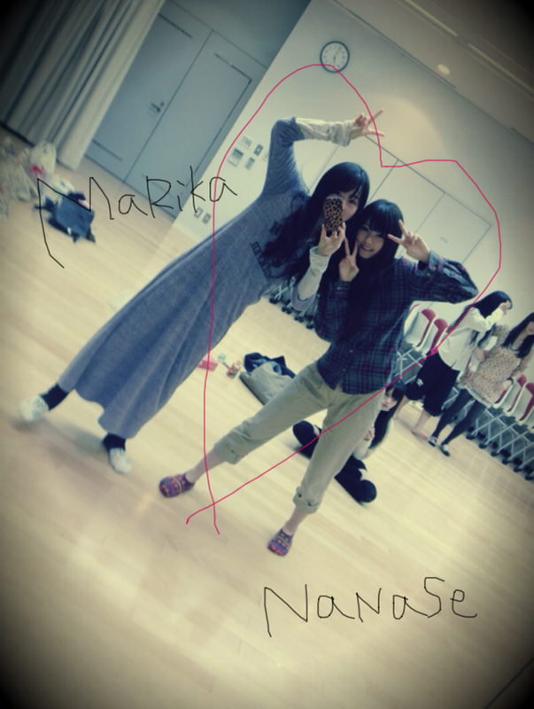

| 2011/12 20 Tue | 31回目*marika |
ベビたんですよ。
いつも読んでくださってる方、
初めて読んでくださった方、
コメントしてきださった方、
ありがとうございます。
いつの間に沢山のコメントが...っ!!
うれし----><
うぅ----れしい-----です＊°+
質問じゃんじゃん
お答えしまっせ:Dきらきら
...............................
・サンタさんにプレゼントお願い何にする？
リアルな動物のぬいぐるみ♡
パパにちゃんといいました。←
・今スマーフ何レベルなの？
どやってされた!!
ちなみに私はレベル９ですどやあああああ!!!
スヌーピーストリートも
やり始めましたどやあああああ!!!
・年下に応援されるのはいやですか？
ええ!!いやだなんて....
うれしいですよ♡
ありがとうございますっ=33
・お母さんなにもの？
デザイナーさんかなんかやってたんですか？
元ファッションデザイナーです。
服や家具のこだわりがはんぱないですよ!!
・炭酸飲料限定にしたらなにが好き？
ジンジャーエール♡♡
・何色のサイリウム振ればいいの？
質問としてとらえました。笑
では、私のイメージカラーが
あればそれがいいかな^^
・ツリーの待受にします。してもいいかな？
ぜひぜひっ!!
私も待ち受けにしてます。
クリスマスまでやりますよ:D☆
・気になる洋服のブランドあったら教えて！
最近気になるのは
jouetie
かな^^*?
好きなのは
BEAMS BOY
Par Avion
RNA~N~
KAPITAL
JOURNAL STANDARD
です♡
どれも自分じゃ買えないけどね*
・駅の発車メロディーが
好きっていうものがある？
意識してちゃんと聴いてなかった° °!!
いろんなメロディーがあるんですね♪
・なにかぜひ見て欲しい
オススメの映画とかDVDってある？
う〜んそうだな..
前にもかいた
ジュラシックパーク
バックトゥザフューチャーの他に
サンダーバードの実写映画とか
ギャラクシークエストっていう映画も
おもしろいです。
サンダーバードがかっこいいんだこれが!!
実写じゃない人形のもおしゃれなので
興味があったら観てください^^*
・まりかちゃんの乃木坂の中で推しめんは誰？
かわいこちゃんがいっぱいで
迷っちゃいますよ**!!
みんなに毎日きゅんきゅんだからね♡
・長いコメは読みづらいですか？
そんなことないです!!
長いコメントもとってもうれしいです＊
しっかり読んでます☆*
・元気が出ないときとか落ち込んだ時は
どうやって元気になりますか？
みなさんからのコメント読みます＊
うれしいから何回も読みます♡
親友に電話したりして
沢山笑ってたら自然と元気になります*。
・将来的にどのような芸能活動をしたい？
いろんな活動ができたらいいな。
やっぱりファッション雑誌に出たいです!!
・ファンの方に何言われると高まる？
何...、何って何でも!!
応援してくださるなら＊!!
私は握手できるだけで
高山になります。↑↑
・いちご豆乳はオリジナル？
元からレシピあったの？
ジューススタンドで飲んだ時
作れるかな？って思って
おいしくなりそうなもの
放り込んで混ぜてみました笑
ミキサーがあれば簡単になんでも
ジュースにできます:)☆
・朝ごはんは ご飯かパンどっちですか？
今の気分だったら....
パンかな。←
どっちも派です^^にひ
・ベリーダンスとかできますか？
でっできませーーーん!!!
・バレエのほかには
どんなダンス習ってましたか？
ジャズダンスをほんのちょとだけ...
ダンスはすきです。
・乃木坂のダンスレッスンは厳しいですか？
難しいダンスもあるけど
すきだから楽しいです♪
...............................
はい。今日はここまで!
しゃしん＊

ななせのにぼしがおいしくて
それずっと食べてた笑
私もいつもにぼしと
ナッツとドライフルーツ
持ち歩いてます*
ななせと仲良しこよし♡
あっ
お兄ちゃんに
オススメのロックバンド
入れてもらったよ-へっへ
電車ん中で聴こうっと^^
♪♫~♩~♪
オススメの本。
沢山ありがとうございます♪
読んでみようかな＊
山田悠介さんの本では
『スイッチを押すとき』
『ライブ』
『DUST法』
すきです。
でもどれもおもしろい‼
さむいのよ-----------ん

こうやってみなさん。
あったかくしてください。
私は冬になるとマフラーで
首をぐるぐる巻きにします。
コメント沢山ありがとうございました。
何回も読み返しました*
にこにこ
ほわほわ
めっちゃ頑張らなっ=33って思います。
明日も一緒に頑張ろう。
昨日パワーを出したけど....
笑ってくれてありがとうございました。
しっかり元気になってね*
もうすぐクリスマスですよ☆☆
イベント頑張ろ^^

MerrY ChRistMAs
ベビたん*****bA by marika